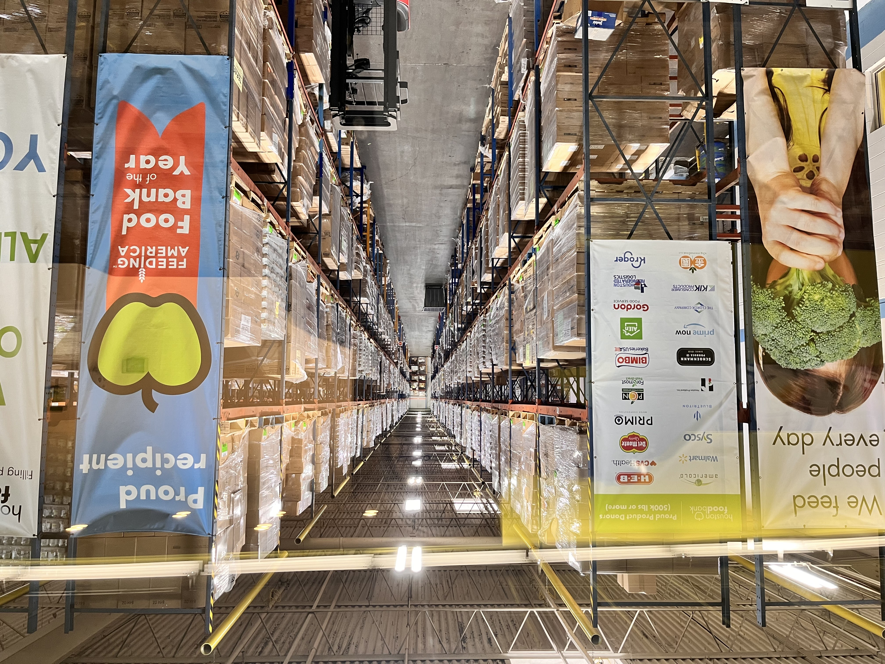

Volunteering at the Houston Food Bank
On a bright morning, I had the privilege to volunteer at the Houston Food Bank — one of the largest food distribution centers in Texas. Alongside a team of passionate individuals, we organized, packed, and distributed food for families in need. It was more than just physical work — it was about compassion, teamwork, and giving back to the community I now call home.
This experience reminded me how small actions can make a big difference. It strengthened my sense of purpose and connection to the American people — beyond classrooms and textbooks.
